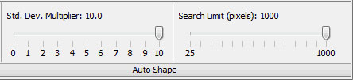

The Auto Shape tool creates a shape automatically that encloses fluorescence from irregularly shaped tumors or organs in images of small animals.

The Standard Deviation Multiplier (Std. Dev. Multiplier) is used in this equation to calculate the Threshold Value:
Threshold Value = User-Defined Background + (Background Standard Deviation x Standard Deviation Multiplier)
In general, increasing the Std. Dev. Multiplier increases the threshold and reduces the size of the Auto Shape by excluding more pixels of lower intensity. Similarly, decreasing the Std. Dev. Multiplier increases the size of the Auto Shape.
The Search Limit controls the size of the image area that is searched to find a region of interest. The area searched is a square centered on the mouse click such that the distance (pixels) from the center to the mid-point on any of the four line segments is equal to the Search Limit.
Setting the Search Limit to a smaller value can exclude unwanted fluorescence nearby, confining the Auto Shape to the region of interest. Setting the Search Limit too low, however, could result in edges where the search area intersects the fluorescence in the region of interest.
NOTE: Search Limitis measured in pixels, so images scanned at higher resolution (smaller distance between data points) require higher search limits to cover the same image area.